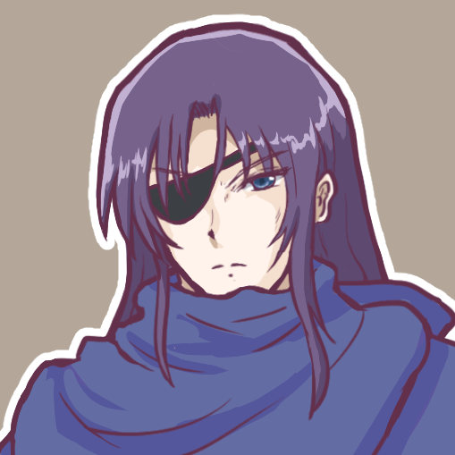
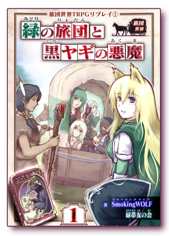
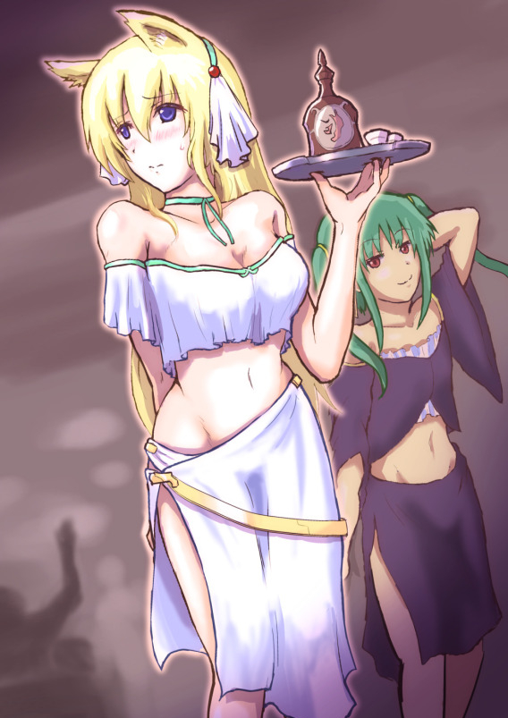
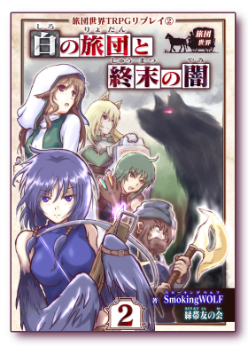
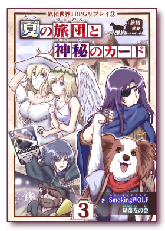

■2023-09-16 (土) 旅団世界TRPGリプレイ3巻 人気投票結果！ ＆ 1～3巻紹介▼
『旅団世界TRPGリプレイ』の3巻の人気投票結果が出ましたので、
今回は旅団世界TRPGシリーズの記事です！
なお最近のアルバートの動向だけ気になる人向けに、
リプレイ3巻からアルバートの印象的なシーンを抜粋して映像化！
アルバートはこの世界でも元気にやっております！
【◆旅団世界TRPGリプレイ3巻、
人気投票結果発表！】
みなさまのご投票、ならびに各キャラへの熱意ある応援コメント、
本当にありがとうございます！
以下ページより、いただいたコメント入りの
人気投票結果をご覧いただけます！
（いちおうネタバレ注意ですがアルバートのよそでの評判を見られたりします）
【3巻人気投票結果発表ページ】

ネコビトのキャシール と 銃使いアルバート
人気投票、上位4位はプレイヤーキャラクターたちが占めていましたが、
NPCの中ではネコビトのアマチュアアイドル『キャシール』と、
銃使い『アルバート』が並んでNPC中トップの5位でした！
キャシールは主にサイコロの出目のせいでおもしろ不憫キャラとして、
アルバートはプレイヤーキャラたちに同行する中で
世間知らずっぽさを見せたり、戦闘で活躍する姿がよかったようです。
たくさんのご投票と応援コメント、本当にありがとうございました！
【◆1～3巻のご紹介！】
しばらく新刊は出なさそうなのでこれまでの全巻のまとめを、
これまであまりオープンにされていなかったセクシー挿絵と一緒にご紹介！
【第1巻『緑の旅団と黒ヤギの悪魔』】

1巻はリゼット（表紙の右にいる金髪ケモ耳騎士）たちの始まりの物語！
彼らはグリーンタイド旅団という旅団に新規加入するのですが、
歓迎会で開かれた模擬戦でクリティカルを出して
団長ギリアムをうっかり殺害！
その妻テレサが新たな旅団長になるところから始まってしまう物語です！
この巻では、旧作キャラとして
『(自家製)片道勇者TRPGリプレイ』で登場した
テレサとギリアムのみ登場しています。
いつのまにかできた二人の娘、
ティセ（表紙中央で馬車から顔を出してる下側の少女）も
新たに参戦し、物語に関わってきます！
果たして彼らは街に潜む悪魔に立ち向かうことができるのか！？
→ 【第1巻『緑の旅団と黒ヤギの悪魔』 Amazon販売ページへ】
【第2巻『白の旅団と終末の闇』】

自分たちで新たに『ホワイトドーン旅団』を設立したリゼットたち！
そこで新人募集の面接が行われるのですが、
その中には薬師ネムリがいました。
ホワイトドーン旅団は南の島、シールダルク島にて
『旅団大会』に参加するのですが、その途中
『闇』なる存在が現れつつあることが明らかに！
そんな中、ネムリは何やら『闇』について知っているようで、
驚くべき情報を語り出します。
その身には、『闇の肉』なるものが埋め込まれた手術痕が……！（↑挿絵）
『片道勇者』風に、『闇』との戦いのストーリーが
繰り広げられる第2巻『白の旅団と終末の闇』！
『(自家製)片道勇者TRPGリプレイ』で登場したプレイヤーキャラクターっぽい人たちも
ほんのり交えて、闇と戦う物語が繰り広げられます！
→ 【第2巻『白の旅団と終末の闇』 Amazon販売ページへ】
【第3巻『夏の旅団と神秘のカード』】

新たな旅団員、獣人の少年パピオリアが加入した『ホワイトドーン旅団』。
だが加入早々、リゼットらホワイトドーン旅団は
想像以上に過酷な大規模ミッションに参加させられることに！
何とかその任務を終え、途中で天使の少女を拾って
クロスロードの街に無事帰還したリゼットたちだったが、
街では知らぬ間に不思議な出来事が起きるようになっていた。
『マイト＆ドラゴンズ』というトレーディングカードゲームが
引き金となって起きる様々な事件、依頼、そして陰謀。
ホワイトドーン旅団はこの夏休みの中で異変を究明すべく、
あるいはそれぞれの欲求や好奇心に従って行動を開始！
いつの間にか明らかにリゼット団長っぽい見た目の人の
セクシー写真集が販売されていたり（↑挿絵）、
人類を消滅させかねないカードを手に入れるべくカードゲームに参加したり、
天使の少女のためにアイドル展開活動したりと、
ホワイトドーン旅団は各々の目的で調査や挑戦の時間を過ごします！
→ 【第3巻『夏の旅団と神秘のカード』 Amazon販売ページへ】
【動画作品『見習いたちの旅団講習』】
『見習いたちの旅団講習』前半動画 → 後半動画はこちら
(↑ライブ配信向けにちょっとゆっくりめなので2倍速視聴推奨！ 当時のチャットも見られます)
こちらの『見習いたちの旅団講習』動画は2巻と3巻の間にあった物語です！
新プレイヤーキャラであるパピオリアが初登場した回！
旅団員ライセンスをもらいに試験を受けに来た
クバ、ティセ、パピオリアの3人でしたが、
そこで起きたのは背筋も凍るような事件でした！ というシナリオです！
このあとすぐ3巻のお話に繋がるので、
初めての方でもこの動画だけご覧になっていれば、
パピオリアさん視点で3巻をしっかり楽しめます！
もちろんご覧にならなくても楽しめます！
本も動画も、興味を持った順でご覧ください！
そして2023年9月現在、1～3巻が半額セール中で
全品￥450となっておりますので、
気になる方はよければこの機会にぜひ！
→ 【旅団世界シリーズ ページ(Amazon)】
【今後について】
『旅団世界TRPGリプレイ』シリーズは、電子書籍としては
ひとまず3巻でいったん休憩で、今後は動画などで
すそ野を広げる方向に進めたり、不定期に刊行する形に移ります。
今は生活のこともあって『片道勇者2』の開発を中心に進めますけれども、
今後も私の中に急に湧いたTRPG欲の分だけ
旅団世界コンテンツが増えていく予定です！
期待は薄めで、気長にお待ちください！
そして『旅団世界TRPGリプレイ』のレビューや人気投票を
入れてくださった皆さま、いつも本当にありがとうございます！
プレイヤーも私も大喜びです！
私はデジタルゲームも好きですがTRPGも好きなのと、
(好き勝手にやれる)お話作りの非常にいい練習になっているので、
今後もときどき遊んでいきたいですね！
私が遊ぶ分はだいたいリプレイになりますので、気になる人はお楽しみに！
2023-09-16 (土)  カテゴリ: TRPG
カテゴリ: TRPG
 カテゴリ: TRPG
カテゴリ: TRPG